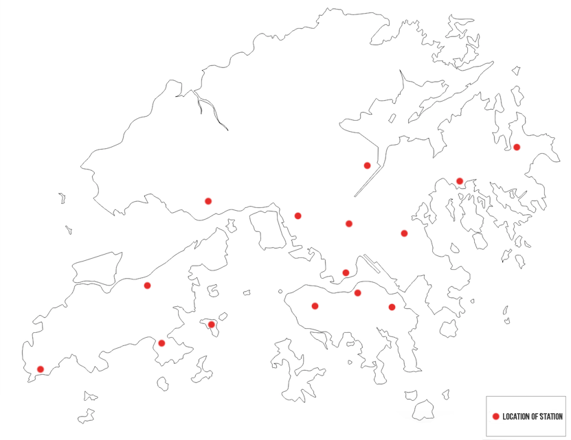
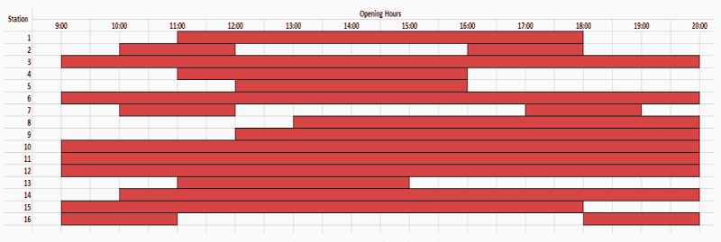

28 March 2016 | HKU Main Campus
WHAT IS HK12?
HK12 stands for Hong Kong in 12 hours. It's an Amazing Race styled event where teams of 4 will compete with each other by completing tasks at stations around HK. Teams will be given 12 hours to complete tasks and their mission will be to gain the highest possible points to win the Grand Prize.
WHY HK12?
The Student Cultural exchange network aims a promotion integration and internationalization within the students of HKU. We hold this event mainly to promote cultural exchange within teammates. Participants not only have the opportunity to work with people from different backgrounds but also meet new people in the process.
HOW DOES HK12 WORK?
The starting and ending points of HK12 will be The HKU Main Campus. Locations of tasks are called Task Stations and they will be spread out around Hong Kong, encompassing Hong Kong Island, Kowloon and New Territories. Each Task Station contains one task. Teams can choose to go to any Task Station they like and in whatever order. Note: The map below is just an example.
Each Task Station is given points based on the following criteria:
However, exact locations of tasks will not be given before-hand. Instead, participants will only be given clues to pin point where the task could be on the day of the event.
DO I GET ANYTHING BEFORE-HAND?
Yes, a week before the event, participants will be given basic information about the event to prepare their 12 hour journey around Hong Kong. This will give you and your team enough time to strategize your route and transportation. Participants will be given the following information related to each Task Station:
An example of opening and closing times of stations:
ANY OTHER WAYS OF GETTING POINTS?
Other than completing tasks at the Task Stations, participants can gain extra points by:
HOW DO I REGISTER?
You can register by filling the Google Form.
Want to see even more about this event? Check out our album from HK12 2015:
HK12 2015 Album